A record is a map to field locations
In HW3, a record value maps field names to memory addresses. Looking up a field is therefore a two-stage operation: obtain the field’s location from the record, then read that location in the current store.
record r = { score ↦ ℓ1, level ↦ ℓ2 }
memory M = { ℓ1 ↦ 12, ℓ2 ↦ 3 }
r.score = M(r(score)) = 12
Constructing a nonempty record evaluates field initializers in order and allocates fresh, distinct cells for the results. Updating a field changes one cell rather than rebuilding the entire record value.
Copying a record value can preserve sharing
Suppose a contains a record with score ↦ ℓ1, and a second variable b receives that same record value. The cells holding a and b can be different while their field maps still contain the same ℓ1.

View Mermaid source
flowchart LR
accTitle: Two records can share one field cell
accDescr: Variables a and b have separate cells, but both stored record values refer to the same score location.
A["Variable a"] --> LA["Cell A<br/>record value"]
B["Variable b"] --> LB["Cell B<br/>record value"]
LA -->|"score field"| S["Shared field location 1<br/>contains 12"]
LB -->|"score field"| S
After b.score := 20, reading a.score returns 20. This is aliasing through the record. By contrast, rebinding or assigning a new record to b changes what ℓB contains; it does not necessarily modify the old record still held by a.
View Mermaid source
flowchart TD
accTitle: A step-by-step reasoning flow
accDescr: Each arrow passes the result of one reasoning step to the next.
N0["Evaluate the record expression<br/>Obtain a field-location map and the<br/>resulting store."]
N1["Find the named field<br/>Missing field means no applicable lookup<br/>rule."]
N0 --> N1
N2["Read or update its location<br/>Use the current store, including prior<br/>effects."]
N1 --> N2
N3["Preserve the rest of memory<br/>Other aliases can still observe this same<br/>cell."]
N2 --> N3
Reachability explains garbage collection
Memory is safely reclaimable when the running program can no longer reach it. Start from roots—live environments and other runtime references—and follow pointers through values, records, and captured environments as appropriate to the machine.
A simple tracing collector maintains a set of marked locations and a worklist. Remove one item, mark it if unseen, and add any locations reachable directly from its value. Once the worklist is empty, unmarked allocated cells can be reclaimed. Remembering visited locations handles cycles.

View Mermaid source
flowchart TD
accTitle: Is this allocated location reachable from the roots?
accDescr: Select the branch that matches the current case.
Q{"Is this allocated location reachable from<br/>the roots?"}
Q -->|"Yes"| N0["Retain it; follow any outgoing references<br/>not already visited."]
Q -->|"No"| N1["It can be reclaimed by a reachability-<br/>based collector."]
Reachability is conservative relative to whether a program will actually use a value in the future. A reachable cell may never be read again, but retaining it avoids incorrectly freeing live memory. The lecture’s undecidability discussion concerns perfect prediction of future usefulness, not the finite graph traversal used by a tracing collector.
Pointers and lifetime errors
| Problem | What happens | Mental model |
|---|---|---|
| Dangling reference | A live reference points to reclaimed storage | The graph still contains an edge to a deleted node |
| Memory leak | Unneeded storage remains allocated | Storage outlives its useful role |
| Double free | A cell is manually reclaimed more than once | Ownership/lifetime bookkeeping is inconsistent |
| Cyclic garbage | A group of cells points internally but has no path from roots | Internal edges do not create root reachability |
A simple reference-counting collector cannot reclaim an isolated cycle solely by waiting for all reference counts to reach zero. A tracing collector can identify that cycle as unreachable from roots.
The homework connection
HW3 requires records, field lookup, and field assignment. It does not request a garbage collector. Use reachability diagrams to understand sharing, while keeping the actual assignment implementation scoped to its AST and rules.
The empty-record rule in HW3 is unusual: {} evaluates to Unit, not a record with zero fields. Follow the specific RECF rule rather than importing the behavior of another language.
Check your understanding
Two variables contain equal field maps. Must their own variable cells be the same location?
Reveal the reasoning
No. Variable-cell identity and field-cell identity are different levels. Distinct variable cells can contain record values that point to the same field cells, so mutation through a field may be shared even when assigning a new value to one variable is not.
Read alongside: lecture 9, pp. 5–10 and 15–20, HW3, pp. 2–3, English book, chapter 7.